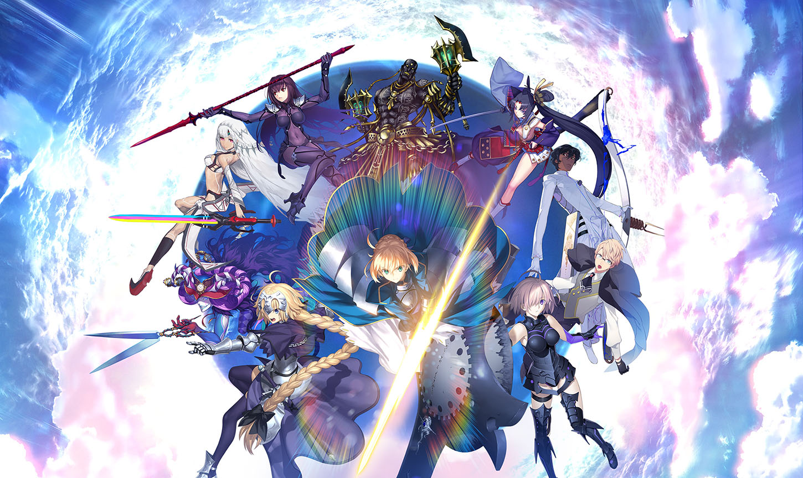

Fate/Grand Order
《Fate/Grand Order》（簡稱Fate/GO、FGO），是TYPE-MOON推出的一款智慧手機專用的角色扮演、電子卡牌收集社交網路遊戲，是TYPE-MOON為紀念《Fate/stay night》十周年而進行的企劃。《Fate/Grand Order》大致繼承Fate系列的設定，TYPE-MOON其他作品（如《Fate/Zero》和《Fate/Apocrypha》、《Fate/EXTRA》、《Fate/Requiem》）的角色亦有登場。 故事簡介
秘密設立的研究機關「菲尼斯‧迦勒底」（簡稱迦勒底）結合各種技術，觀測人類一百年之後的歷史，確保人類的時代能永遠存活下去。 在故事開始半年前，迦勒底在一次觀測時，發現人類史突然在2016年7月滅絕。查究原因，研究員認為與同一次觀察時，7個同樣突然在時間軸上出現的「特異點」有關。為了延續人類歷史，迦勒底招募了主角在內48名可以進行靈子轉移的人類，前往過去調查與修正「特異點」。 第一部，圍繞主角修正7個「特異點」的故事為主（最受玩家歡迎為第七特異點，第六特異點，二者先後推出動畫劇集與劇場版）。 第二部，世界受到異聞帶侵略，主角需要繼續戰鬥以拯救世界。